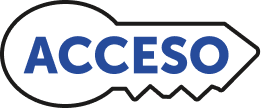

Practicar: Tt y Ll
STANDARDS PLACEHOLDERPreparación: repasar y practicar
Establecer un propósito
Mientras seguimos aprendiendo sobre cómo crecen y sobreviven los animales, practicaremos lo que aprendimos sobre la lectura y la ortografía de palabras con Tt y Ll.
- Muestre y lea en voz alta los Objetivos de la lección.
Repaso acumulativo: leer para desarrollar
la fluidez (3 MIN.)
- Pida a los estudiantes que vayan a las páginas 2-3 de Mi libro MÁX. Pídales que lean “La vaca marina” en voz baja para repasar las destrezas aprendidas y para desarrollar la fluidez.
- Camine por el salón de clases y revise la precisi[on de la actividad a los estudiantes mientras completan la actividad de Lee con un compañero.
Proporcione comentarios correctivos y de apoyo: Camine por el salón de clases y escuche cómo leen los estudiantes. Si se equivocan al leer alguna palabra, ayúdelos a leerla. Primero, guíelos sílaba por sílaba, luego pídales que lean la palabra completa de manera independiente. Tome nota de las letras o sílabas en las que tienen dificultades para repasarlas.
Repaso acumulativo: fonética y palabras de
uso frecuente (2 MIN.)
- Pida a los estudiantes que coloquen sus libros a un lado y que dirijan su atención a las tarjetas de fonética y de palabras de uso frecuente.
- Use la rutina Repaso acumulativo rápido para repasar las Tarjetas de fonética 01–08
Cumulative Review Routine
Proporcione comentarios correctivos y de apoyo: Durante esta actividad, escuche y note si los estudiantes necesitan apoyo adicional al leer alguna de las tarjetas. Incluya y destaque esas destrezas en las actividades de las próximas lecciones.
Presente una actividad de reto a los estudiantes. Pídales que usen dos palabras de uso frecuente en una oración, ya sea oral o escrita.
Instrucción explícita aplicada a la lectura y la escritura
Conciencia fonológica: añadir sílabas (2 MIN.)
- Explique a los estudiantes que van a añadir sílabas para formar palabras nuevas usando la rutina Añadir sílabas.
Demostrar: loma, pa
Vamos a añadir sílabas para formar palabras nuevas. La palabra es loma. Vamos a añadir la sílaba pa al inicio. Escuchen cómo la añado: loma, añado pa y formo paloma.
- Use la diapositiva para conectar los sonidos con las letras. Muestre la palabra y la sílaba que se añade, señale cada una mientras las lee y luego lea la nueva palabra entera.
Practicar: la, a; to, ma
- Continúe con las palabras y sílabas de la lista.
- Proporcione comentarios correctivos y de apoyo, destacando el sonido /t/ y /l/en las palabras.
Digan ala. (ala) Añadan do. ¿Qué palabra forman? (alado)
Digan toma. (lleva) Añadan te. ¿Qué palabra forman? (tomate)

Si los estudiantes necesitan apoyo adicional al añadir sílabas, pueden usar la pizarra magnética para representar la palabra y la sílaba que se añade.Leer sílabas y palabras (5 MIN.)
- Pida a los estudiantes que vayan a la sección Lee sílabas y palabras en la página 5 de Mi libro MÁX.
Demostrar
Línea 1: Vamos a leer esta sílaba: /t/, /e/, te. Repitan conmigo: te.
Línea 2: Vamos a leer esta palabra: ti-po, tipo. Repitan conmigo: tipo
Practicar
- Pida a los estudiantes que lean la línea 1 en eco después de usted. Luego, pídales que lean la línea 1 a coro. Continúe este proceso con las líneas 1-5.
Línea 1: contiene sílabas con las letras Tt y Ll.
Líneas 2-3: contienen palabras con las letras Tt y Ll, ya sea en la primera, segunda o tercera sílaba (incluyen inflexiones -o, -a, -ito, -ita).
Líneas 4-5: Pida a los estudiantes que lean la línea 1 en eco después de usted. Luego, pídales que lean la línea 1 a coro. Continúe este proceso con las líneas 1-5.
- Use Apoyo de vocabulario para conectar las palabras que leen con sus significados.
Pida a los estudiantes que lean las palabras de la línea 6. Esta línea contiene palabras que pueden representar un reto. (Diferenciación y aprendizaje acelerado).
Proporcione comentarios correctivos y de apoyo: Si se equivocan al leer las sílabas o palabras, demuestre cómo combinar correctamente los sonidos y sílabas. Por ejemplo, si el estudiante lee la palabra late como lote, diga: Leamos juntos esta sílaba (señale la sílaba la Leamos juntos esta sílaba (señale la sílaba la) /l//a/, la. Combinemos las sílabas para formar la palabra: la-te, late.
Dictado con conocimiento fonológico (5 MIN.)
- Pida a los estudiantes que vayan a la sección ¡Escucha, separa y escribe! en la página 6 de Mi libro MÁX..
Use la rutina de ¡Escucha, separa y escribe! para demostrar la primera palabra.
Esta es la imagen de una tela. Digan: tela. Miren y escuchen mientras separo la palabra en sílabas te-la. Por eso ven dos arcos de sílabas. Ahora vamos a separar los sonidos de cada sílaba. te: /t/, /e/. ¿Cuántos sonidos hay en la sílaba te? (dos). Coloquen una ficha en cada caja de la primera sílaba. (Repita con la).
Ahora vamos a reemplazar cada ficha con la letra correcta. Comencemos con la sílaba te. ¿Cuál es el primer sonido? (/t/) ¿Qué letra escribimos para ese sonido? (t) Vamos a escribir la letra t en la primera caja. ¿Cuál es el siguiente sonido? (/e/) ¿Qué letra escribimos para ese sonido? (e) Vamos a escribir la letra e en la segunda caja. Repita con la sílaba la en las siguientes cajas. Ahora vamos a leer cada sílaba y después la palabra completa: te-la, tela.
- Pida a los estudiantes que completen los ejercicios 2 y 3 con el mismo procedimiento.
- Use la Guía para el dictado y la rutina de Dictado para dictar la palabra del ejercicio 4 y la oración del ejercicio 5. Estas palabras incluyen la destreza de la semana y otras previamente enseñadas para verificar si las han retenido hasta ese punto.
Guía para el dictado
| Palabra sugerida |
|---|
1.tela |
2.lima |
3.tapete |
4.late |
5.Tito toma la lata. |
 Verifique: Si los estudiantes necesitan ayuda adicional para escribir palabras con Tt o Ll, y el tiempo lo permite, use las sugerencias GANA para Escritura/Ortografía.
Verifique: Si los estudiantes necesitan ayuda adicional para escribir palabras con Tt o Ll, y el tiempo lo permite, use las sugerencias GANA para Escritura/Ortografía.
Palabras de uso frecuente:
tu, al, también, lugar (5 MIN.)
- Use las Tarjetas de palabras de uso frecuente y la rutina Leer, aprender, escribir para presentar las palabras.
- Pida a los estudiantes que vayan a la sección Lee y escribe en la página 7 de Mi libro MÁX.
- Pida a los estudiantes que lean y luego tracen cada palabra en Mi libro MÁX mientras las dicen en voz alta.
 Ahorrar tiempo: Los estudiantes pueden completar la actividad de Lee y escribe en un centro de actividades GANA.
Ahorrar tiempo: Los estudiantes pueden completar la actividad de Lee y escribe en un centro de actividades GANA.
 Verifique: Si los estudiantes necesitan apoyo adicional para leer las palabras de uso frecuente, y el tiempo lo permite, use las sugerencias GANA para Palabras de uso frecuente.
Verifique: Si los estudiantes necesitan apoyo adicional para leer las palabras de uso frecuente, y el tiempo lo permite, use las sugerencias GANA para Palabras de uso frecuente.
 Use Gestos, elementos visuales, lenguas maternas y contexto para apoyar a los estudiantes a que describan el significado de las palabras de uso frecuente.
Use Gestos, elementos visuales, lenguas maternas y contexto para apoyar a los estudiantes a que describan el significado de las palabras de uso frecuente.
Desarrollar el lenguaje y el vocabulario oral
Desarrollar el vocabulario:
familia, necesitan, árbol (3 MIN.)
- Pida a los estudiantes que vayan a la sección de Palabras que debo saber en la página 7 de Mi libro MÁX.
- Presente las palabras de vocabulario usando las tarjetas de Palabras de debo saber y la rutina Leer, comprender, conectar. Los estudiantes leerán estas palabras en los textos de la semana.
- Agregue estas palabras al Pared de conocimientos. Invite a los estudiantes a usar estas palabras al hablar y escribir sobre las selecciones de la unidad.
 Transferencia de vocabulario (2 MIN.)
Transferencia de vocabulario (2 MIN.)
Ahora vamos a aprender estas palabras en inglés para celebrar que somos bilingües y ampliar nuestro vocabulario.
- Use la rutina Cómo se dice para presentar las Palabras que debo saber de la semana en inglés.
- Pida que los estudiantes que digan la palabra en inglés, que determinen si es un cognado y que la usen en una oración. Use esta tabla como apoyo, si es necesario.
| Español | Inglés | Cognados | Ejemplos de oraciones |
|---|---|---|---|
| familia | family | Sí | Esa es la casa de mi familia. That is the house of my family. |
| necesito | need | No | Necesito ir al mercado I need to go to the market. |
| árbol | tree | No | Tengo un árbol de peras. I have a pear tree. |
Planifique la enseñanza personalizada y las actividades independientes según lo permita el tiempo.